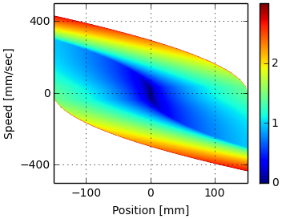
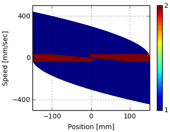

Abstract
As part of my work in MIT’s d’Arbeloff laboratory, I developed optimal feedback laws for a two-speed actuator where both a continuous and a discrete variable must be selected.
Publications & Resources
Project Media




As part of my work in MIT’s d’Arbeloff laboratory, I developed optimal feedback laws for a two-speed actuator where both a continuous and a discrete variable must be selected.

